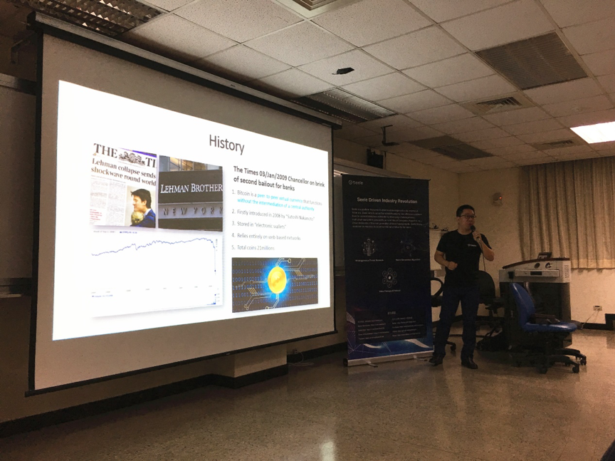
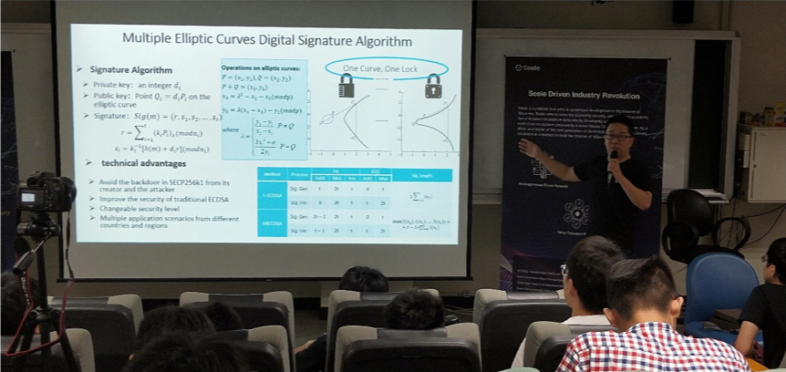

Seele Global University Tour + The Public Chain Born for the Industry
2018-09-10
During this seminar, Professor Liao pointed out that although the blockchain industry is developing rapidly these days, the correct direction is to focus on the construction of the underlying technology. Every traditional industry’s pain points should be analyzed first and then the R&D of blockchain can proceed accordingly. That’s the only practical way to leverage blockchain technology for the upgrading of the industry.
Dr. Wei Bi also delivered a keynote speech ‘Seele Born for the Industry. Concepts like the Neural Consensus Algorithm, Heterogeneous Forest Network, and the Value Transport Protocol (VTP) & Value-Chain HTTP (VHTTP) all kindled the interest of students there. Dr. Wei Bi also revealed that Seele would keep focusing on the technology development for the long run and striving for a healthy and sustainable ecosystem. Seele’s mission is to provide more practical solutions for the entire industry and become the driving force for the next generation blockchain’s development.
At the same time, Dr. Wei Bi also explained Seele’s second yellow paper (published on the same day) to the audience. As a research-based article, the yellow paper is a perfect manifestation of Seele’s strength in technology. Yellow papers covering the fields like cryptography, network, consensus algorithm, distributed network have been and will be published as scheduled. The recently-published yellow paper ‘An Accelerated Method for Message Propagation in Blockchain Networks’ belongs to the network category, and the ‘A secure Multiple elliptic Curves Digital signature Algorithm for Blockchain’ belongs to the cryptography area. More yellow papers covering Seele’s neural consensus algorithm and sPoW will be published soon.
Shih-wei Liao, Associate Professor of the Department of Computer Science & Information Engineering at National Taiwan University, won the Founders Award, Google’s highest honor because of his contribution to the development of Android. After joining the blockchain industry, Professor Liao has endeavored to promote the blockchain’s development in the Taiwanese area. During the seminar, Seele also invites the students from NTU to participate in Seele’s developers’ competition for a richer ecosystem.
2018-09-10
Recently, the first stop of Seele’s Global University Tour and seminar for public chain’s application in the real economy was successfully held in the National Taiwan University (NTU). During this event, Dr. Wei Bi undertook a constructive and in-depth discussion on the core technology of Seele with Professor Shih-wei Liao and his class. Moreover, Dr. Wei Bi shared more use cases in the blockchain ecosystem with the class.

During this seminar, Professor Liao pointed out that although the blockchain industry is developing rapidly these days, the correct direction is to focus on the construction of the underlying technology. Every traditional industry’s pain points should be analyzed first and then the R&D of blockchain can proceed accordingly. That’s the only practical way to leverage blockchain technology for the upgrading of the industry.

Dr. Wei Bi also delivered a keynote speech ‘Seele Born for the Industry. Concepts like the Neural Consensus Algorithm, Heterogeneous Forest Network, and the Value Transport Protocol (VTP) & Value-Chain HTTP (VHTTP) all kindled the interest of students there. Dr. Wei Bi also revealed that Seele would keep focusing on the technology development for the long run and striving for a healthy and sustainable ecosystem. Seele’s mission is to provide more practical solutions for the entire industry and become the driving force for the next generation blockchain’s development.

At the same time, Dr. Wei Bi also explained Seele’s second yellow paper (published on the same day) to the audience. As a research-based article, the yellow paper is a perfect manifestation of Seele’s strength in technology. Yellow papers covering the fields like cryptography, network, consensus algorithm, distributed network have been and will be published as scheduled. The recently-published yellow paper ‘An Accelerated Method for Message Propagation in Blockchain Networks’ belongs to the network category, and the ‘A secure Multiple elliptic Curves Digital signature Algorithm for Blockchain’ belongs to the cryptography area. More yellow papers covering Seele’s neural consensus algorithm and sPoW will be published soon.

Shih-wei Liao, Associate Professor of the Department of Computer Science & Information Engineering at National Taiwan University, won the Founders Award, Google’s highest honor because of his contribution to the development of Android. After joining the blockchain industry, Professor Liao has endeavored to promote the blockchain’s development in the Taiwanese area. During the seminar, Seele also invites the students from NTU to participate in Seele’s developers’ competition for a richer ecosystem.